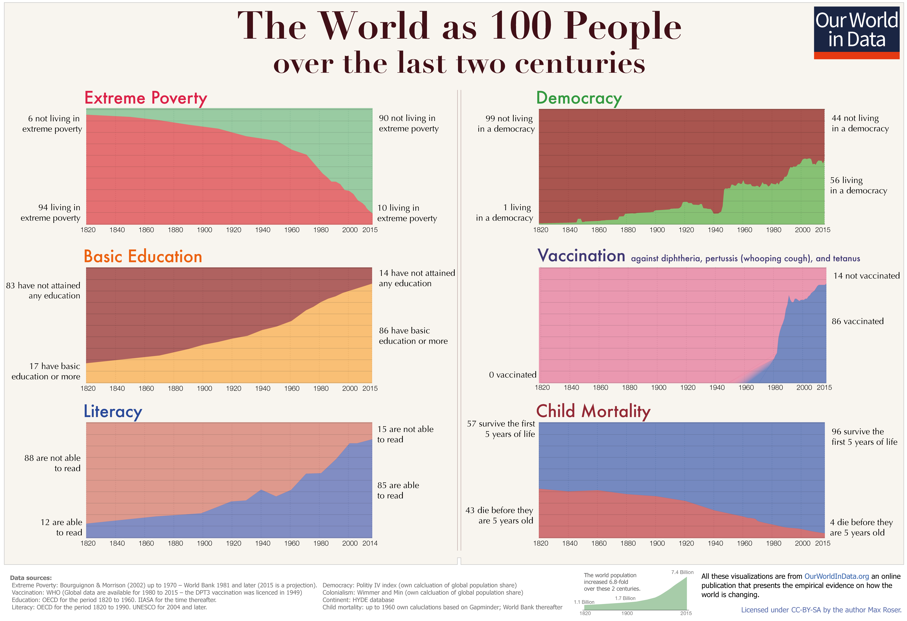

Every day the news lists terrible events. Mass shootings, government destabilization, tensions rising.
It paints this picture that the world is getting more and more troubling and that we are headed towards a future that is worse than the past.
Here's my theory. The world is not getting worse. We are simply hearing about the problems in the world more loudly and frequently than ever before.
More victims of violence and injustice have a voice today than they ever have had in the past.
These voices are what we are hearing.
50 years ago we didn't hear the voices of sexual assault victims.
50 years ago we didn't hear the voices of people in villages exploited by large industrial companies.
50 years ago we simply didn't hear all the pain going on in the world. Now we do.
Hearing all the pain in the world has fast-tracked our ability to address it.
The evidence of global improvement is palpable in every meaningful measure of the quality of life globally.
Child deaths before the age of 5 are the lowest they have ever been.
More people in the world are living under a democratic government than ever before.
The smallest fraction of people ever currently live below the poverty line.
Our World in Data breaks a lot of these very important measures of global quality of life down quantitatively.

I really love this article on Our World in Data which argues for optimism in a rapidly improving world.
What we are feeling in the world today is not a breakdown. It's very rapid improvement.
Be optimistic! I am.